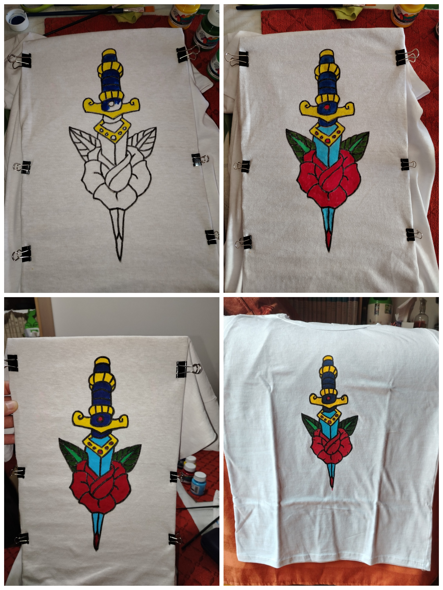
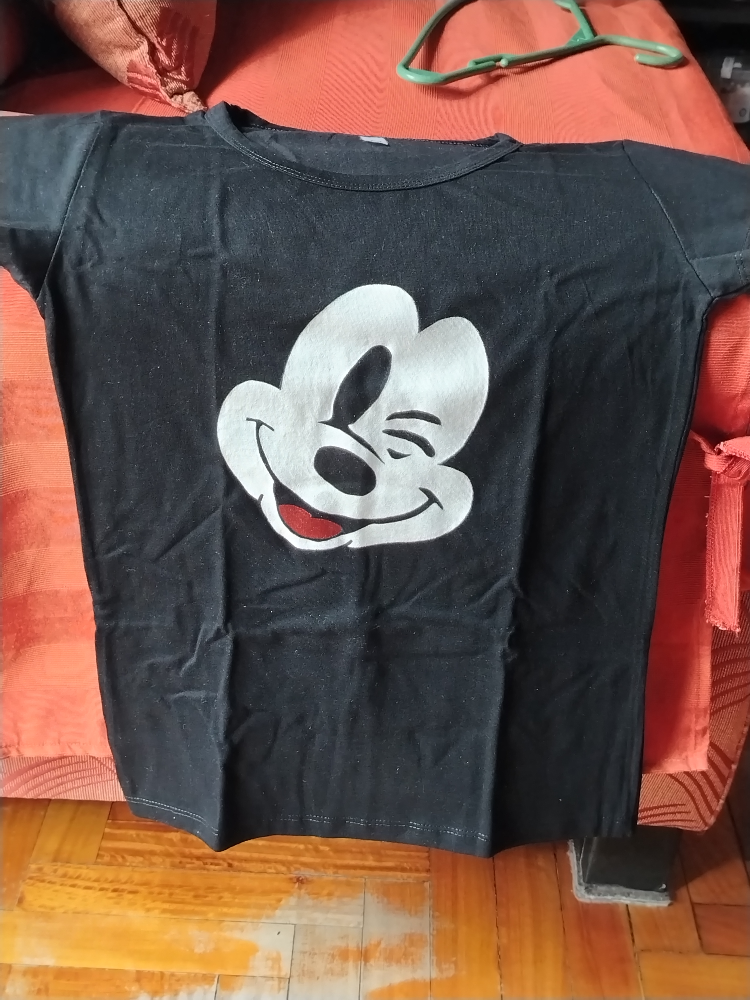
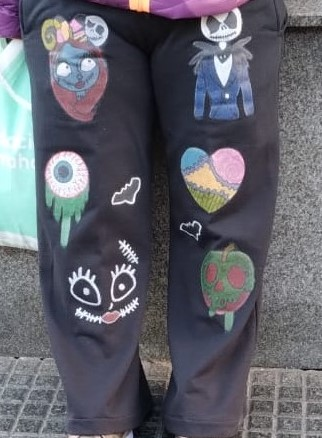

Ilustraciones y diseños únicos pintados a mano sobre indumentaria
Transformo indumentaria en piezas de arte textil únicas. Cada prenda atraviesa un proceso artesanal riguroso, combinando ilustración original, materiales de alta calidad y técnicas de fijación térmica para garantizar durabilidad.
Uso marcadores textiles de precisión y pinceles especializados, culminando con termofijación profesional para asegurar la resistencia al lavado.
Desarrollo conceptos propios y personalizados, adaptando estilos que van desde la estética Kawaii y Pop Art hasta el arte gótico.
Transparencia total en la elaboración: documentamos la evolución desde el boceto inicial sobre textil hasta la pieza final ilustrada.
Compromiso con la precisión en cada trazo, seleccionando pigmentos duraderos y terminaciones cuidadas en cada encargo.






Arte gotico/pop pintado a mano sobre un pantalon.

Arte gotico/pop pintado a mano sobre un pantalon.

Resultado final en un pantalon negro.